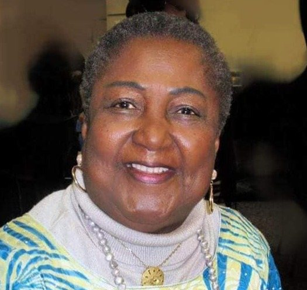

Mrs. Christine Tolbert Norman
Founder of REAP
About Our Founder
Mrs. Christine Tolbert Norman is an international educator, humanitarian, social entrepreneur, and advocate for peace and reconciliation, and agent of positive change. Since 2002 Mrs. Norman has been working to provide hope, opportunities, and empowerment to youth, young adults, ex-combatants, widows, orphans and other marginalized groups in her home country of Liberia through her NGO called Restoration of Educational Advancement Programs (REAP). Mrs. Norman also serves on the Board of Directors of the William R. Tolbert Jr. Foundation, which honors the legacy of her father, the late President William R. Tolbert, Jr. (19th President of the Republic of Liberia) by providing scholarships, leadership development initiatives centered on characterized-based leadership and ethics in management for emerging leaders.
Mrs. Norman is also a Co-Founder of the Isaac A. David, Sr. Memorial School in Paynesville, Liberia and she served as its first Principal from 1968-1972. From 1972-1974, she served as Assistant Superintendent of the Monrovia Consolidated School System (MCSS). Following that; she also served as Assistant Minister of Education for Instructions from 1974-1975 and then Deputy Minister for Instructions from 1976-1980, Republic of Liberia.
In 1985, Mrs. Norman and her family settled in Cote d’Ivoire where she served as an educator at the International Community School of Abidjan. There she started the International Friendship Center, a community and recreational center that hosted educational workshops, vocational training, athletic programs, and entertainment for youths and young adults in the community.
In 1990, a civil war broke out in Liberia, forcing hundreds of Liberian refugees to flee across the border into neighboring Cote D’Ivoire. At that time Mrs. Norman has founded the Liberian Refugee Tutorial Program (LRTP), an educational establishment still in existence today. She also convened and participated in several peace and reconciliation conferences aimed at fostering peace and unity in Liberia.
When the Liberian Civil War came to an end, Mrs. Norman returned to Liberia and founded an NGO called Restoration of Educational Advancement Programs (REAP) and to assist with the post-conflict reconstruction. REAP has collaborated with the government of the Republic of Liberia on numerous initiatives of mutual interests, particularly in the areas of education, youth and women’s empowerment, leadership development, and peace-building. REAP works in partnership with several organizations to provide educational resources to West African nations. These include Pointman Leadership Institute (PLI) that provide principle-based leadership and ethics in management training to over 5,000 public and private sectors, Lifeline Children’s Services to bring help and hope to un-adoptable orphans, and Freedom in Christ Ministries (FICM) to bring hope and healing to thousands of youth and young adults.
Mrs. Christine T. Norman currently serves as a Senior Consultant for Isaac A. David, Sr. Memorial School, Restoration of Educational Advancement Programs (REAP), and William R. Tolbert, Jr. Foundation (WRTJF). She also serves on the Board of Isaac A. David, Sr. Memorial School, Restoration of Educational Advancement Programs (REAP) and Liberia Renaissance Educational Center (LREC).
Mrs. Norman is also leading a movement of a "CRITICAL MASS” of Trustworthy, Responsible, Ethical Leaders in Liberia COMMITTED to the Fight against CORRUPTION and promote good Governance in Liberia.
Our History
Restoration of Educational Advancement Program (REAP) is a national not-for-profit social enterprise with over 20 years of experience providing a range of services and interventions to children, youth, young adults, and women in Liberia - particularly in the areas of education, psychosocial counseling, life skills enhancement, early childhood development, adult literacy, leadership development, agriculture, and entrepreneurship.
REAP’s headquarters are located on 50 acres of land in Bentol City, Montserrado County, in the Republic of Liberia. and consists of 5 building structures, including a multipurpose building, administrative building, boys’ dorm, girls’ dorm, and instructor’s residence. The buildings were previously constructed by the government of Liberia to serve as Indigent Children’s Homes or government-operated orphanages. During the 14 years of civil unrest, the 5 buildings were severely looted and vandalized - leaving only the walls standing.
In 2006, REAP's Founder & Executive Director (Christine Tolbert Norman) entered into a lease agreement with the Government of Liberia to occupy the property to house REAP’s administrative offices and operations. Four out of the five buildings have since been renovated through funding from the UNDP, development/strategic partners, and personal resources of the executive director. REAP’s accredited Vocational, Technical, and Career Institute (REAP-VTCI) currently operates out of the Bentol City campus. The Institute empowers community members, local farmers, market women, and youth through skills-based training, coupled with an emphasis on character development, principled-based leadership, and entrepreneurship, to equip them with marketable employment and life skills to become productive members of society, whether as model employees, farmers, or successful business owners.
In 2015, REAP launched the Early Childhood Development Center (REAP-ECDC) to provide affordable education and early childhood care to children, at-risk youth, and orphans in the community. The ECDC Children’s Feeding Program provides roughly 100 meals a day to disadvantaged youth daily.